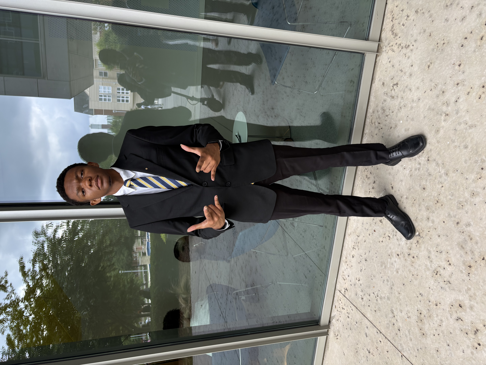

Hello Everyone, my name is Cortrell Davis. I'm am from Stone Mountain Georgia and am a junior cumputer science student attending North Carolina A&T State Univeristy. I also march for the drumline and play cymbals. Outside of drumming, one of my main hobbies is gaming. Another interesting fact about me is that I am a member of Kappa Kappa Psi National Honarary Band Fraternity Incorporated. Down below is a picture of me in my professional attire with the chapter tie we wear :
